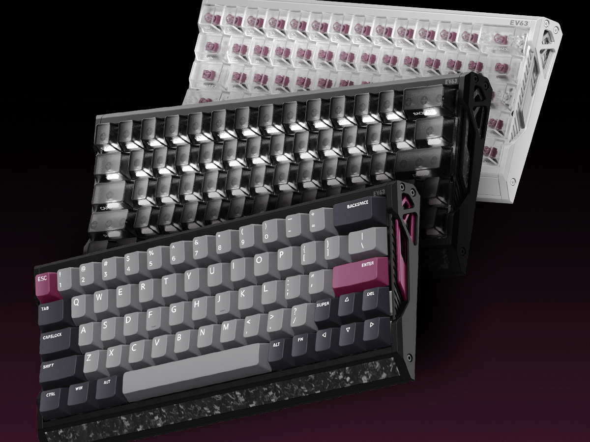

Teclados de Efecto Hall: La Revolución Magnética
La tecnología de Efecto Hall ha transformado los teclados de nicho en el nuevo estándar para entusiastas y profesionales. A diferencia de los switches mecánicos que dependen de un contacto físico, estos utilizan imanes y sensores para medir la proximidad exacta de la tecla.
Rapid Trigger: Permite que la tecla se resetee en el instante en que comienza a subir, eliminando el lag físico de los juegos competitivos.
Actuación Variable: El usuario puede definir si la tecla se activa con un toque sutil de 0.1mm o una presión profunda de 4.0mm, todo desde el software.
Durabilidad Infinita: Al no haber fricción metálica ni oxidación de contactos, la vida útil supera los 100 millones de pulsaciones sin degradación.
